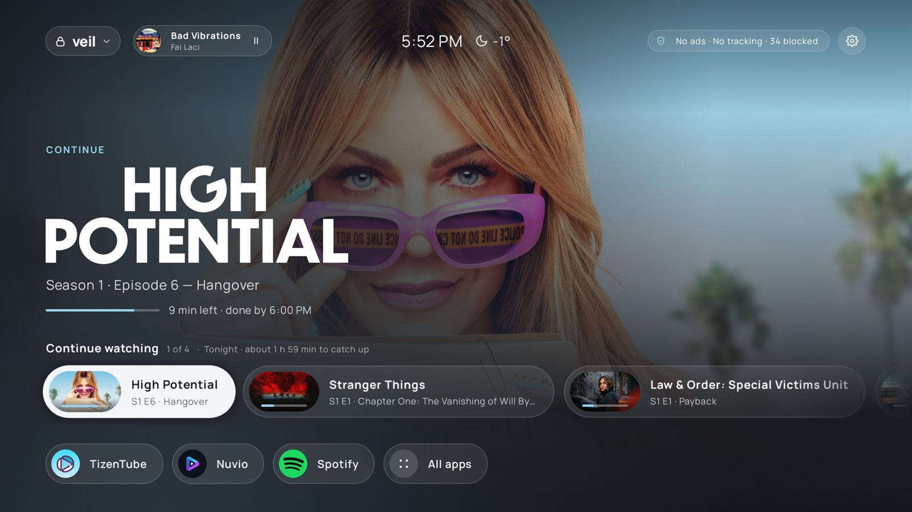
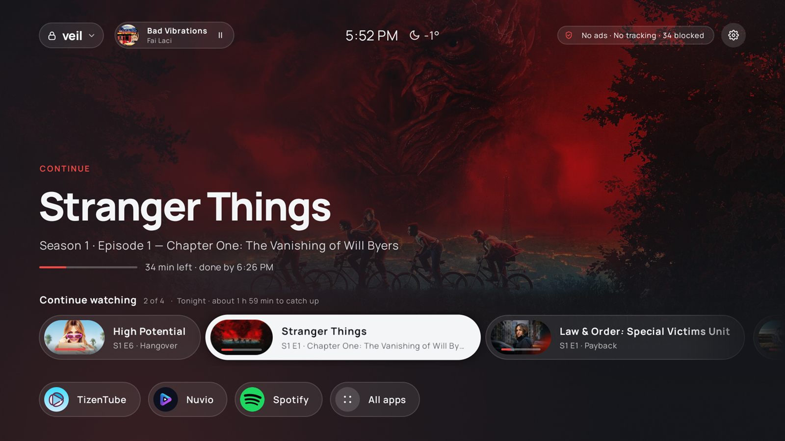
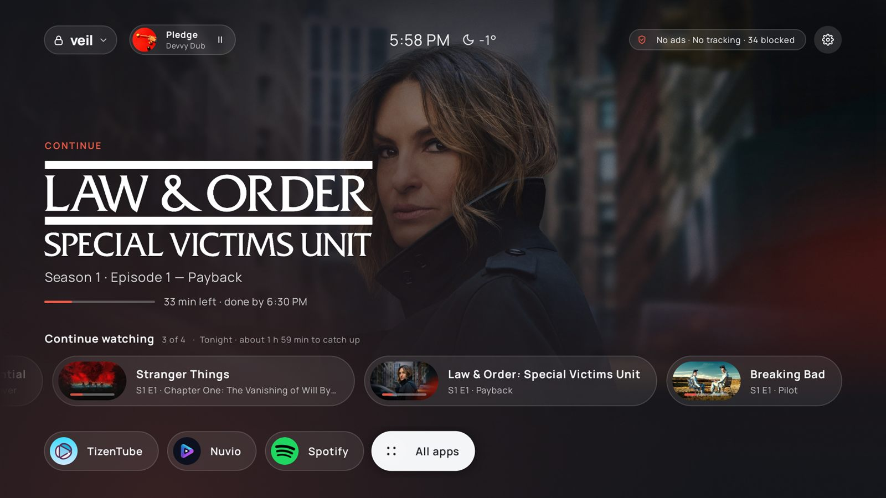
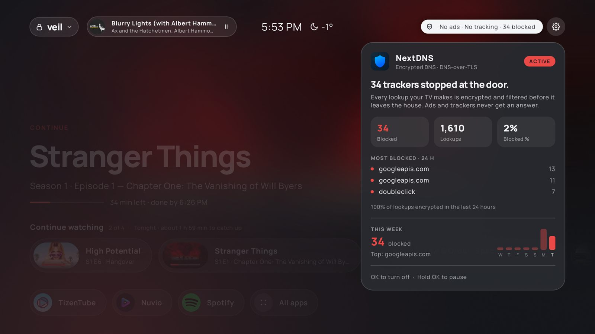
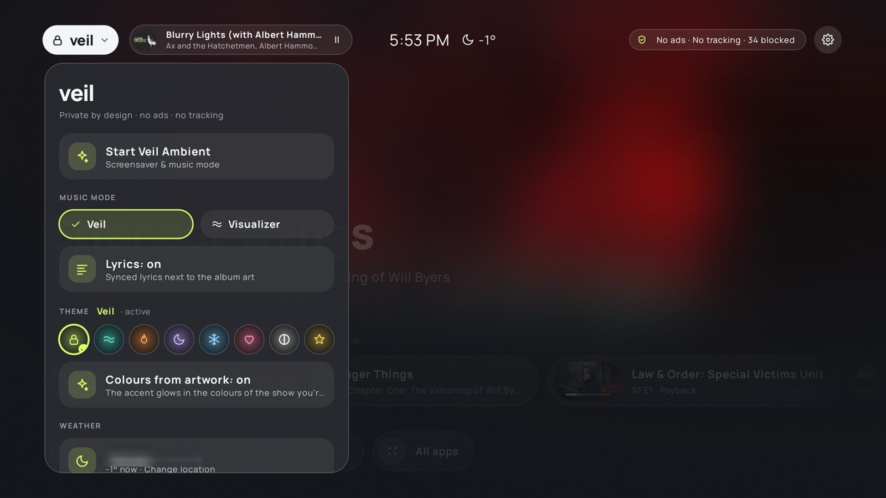
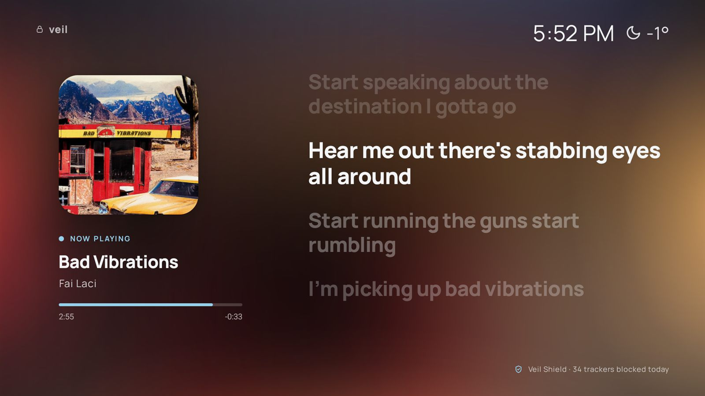
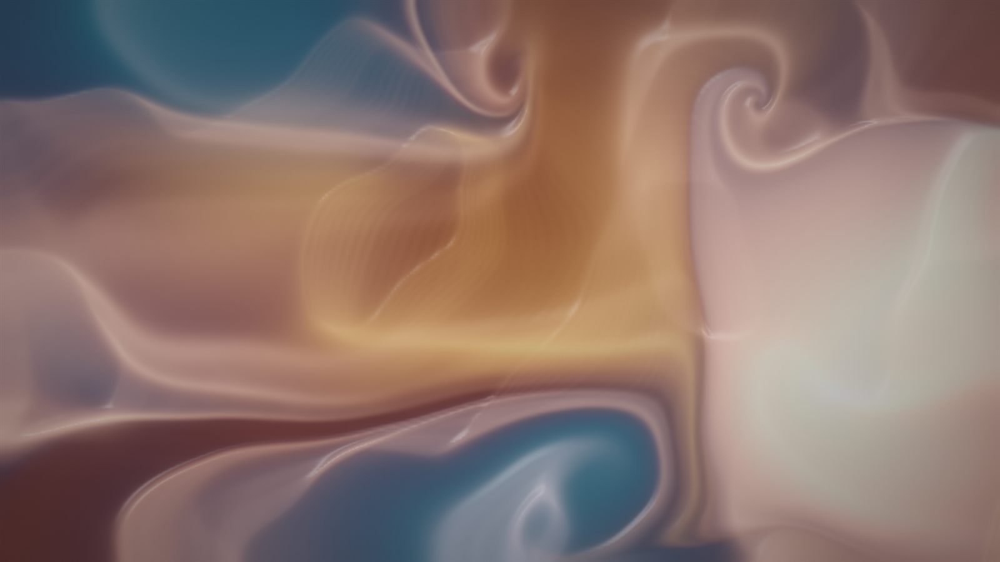
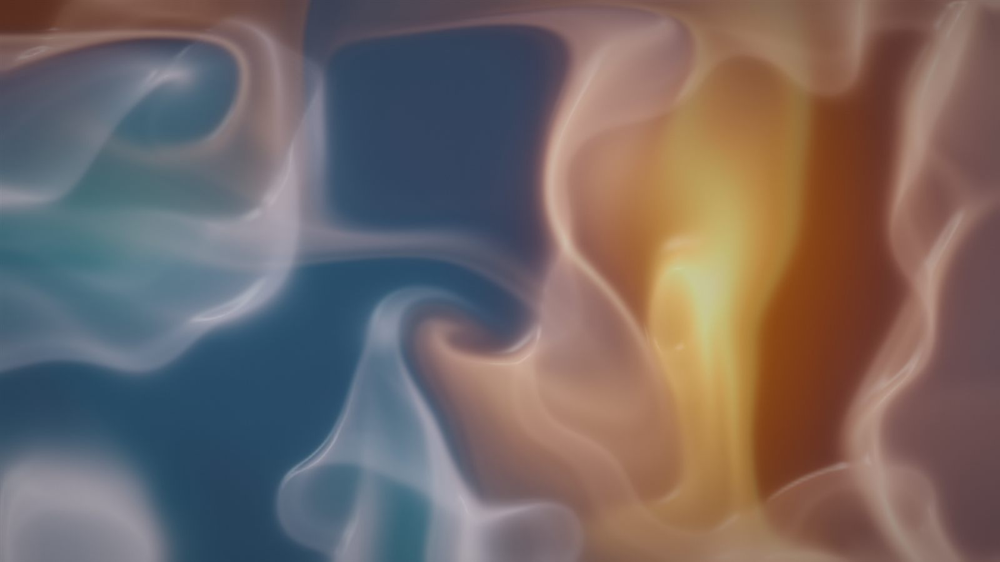

Launcher for Google TV and Android TV
A calm, private home screen for your TV.
Veil replaces the Google TV home screen with big artwork, what you're watching and your apps. No ads, no "recommended for you", no tracking.

Nuvio + Stremio
Continue Watching that opens straight in Nuvio or Stremio.
Your player saves your progress to Trakt, Simkl or MDBList. Veil reads it back and puts your shows and films on the home screen, with the artwork and title logo of what you're on. Press one and it opens the exact episode, ready to stream.
- Pick your tracker, sign in with a code. Trakt, Simkl or MDBList: scan a QR code with your phone. No keys to set up.
- Pick your player once. Nuvio or Stremio, chosen in the Veil menu. No asking every time.
- Mark watched or remove items from the row with a long press.
- Colours follow the artwork, so every show gets its own look.


Privacy
One switch to block ads and trackers on the whole TV.
Veil turns on Android's encrypted Private DNS with NextDNS, or AdGuard DNS if you don't have NextDNS. It covers every app, and you can pause it for 15 minutes when a site breaks.
- See what it blocked. With NextDNS, Home shows how many trackers were stopped.
- Off until you turn it on, and easy to switch off again.


No Veil servers
No accounts, analytics or ads. The TV talks to each service directly over HTTPS.
TMDB
Titles of what you're watching, to get artwork.
Trakt, Simkl or MDBList
Your watch progress from the one you connect, with your own login stored on the TV.
LRCLIB and Open-Meteo
The song that's playing, for lyrics. Your chosen city, for weather.
Screensaver
Synced lyrics and a visualizer that keeps the beat.
When music plays from Spotify or any other app, Veil Ambient shows the album art with lyrics, word by word when they're available. Or switch to a full-screen visualizer that picks out the kick, snare, hi-hats and vocals.
- Locks onto the tempo and pulses on the beat.
- A slow artwork slideshow when nothing is playing.



Themes
Eight themes. Try one on this page.
These are the same colours Veil uses on the TV, along with glassy cards, soft UI sounds and snow in December.
Devices
Made on a Google TV Streamer. Runs on Android TV 9 and newer.
Your TV
A Google TV or Android TV device with Android 9 or newer, with developer options turned on so it can be installed over ADB.
A computer
Windows, macOS or Linux. You build Veil from source; the install guide takes you through it, or an AI coding agent can do it for you.
Light on old hardware
Everything heavy is drawn once and reused, and it was profiled on a real streamer, so it stays smooth on slow TV chips.
Questions
FAQ
Does Veil work with Nuvio?
Yes. Nuvio syncs your progress to Trakt, and Veil shows it in Continue Watching. Pressing an episode opens it in Nuvio, ready to stream.
Does Veil work with Stremio?
Yes. Pick Stremio under "Play shows with" in the Veil menu, and pressing an episode in Continue Watching opens its stream list in Stremio.
Do I need a Trakt account? What about Simkl or MDBList?
Only for Continue Watching, and any one of the three works: Trakt, Simkl or MDBList. You pick it on the TV and sign in with a QR code. Everything else works without an account.
Is it free? Are there ads?
Veil is free and open source under GPL-3.0. It has no ads, no analytics and no accounts of its own.
Can I go back to the normal Google TV home screen?
Yes. Veil doesn't remove Google's launcher. The install guide makes an undo script for your TV, and adb uninstall dev.veil.launcher removes Veil completely.
Why isn't it on the Play Store?
A home screen that blocks ads system-wide and replaces the Google TV launcher needs permissions that are granted over ADB. You install it yourself from the source code.